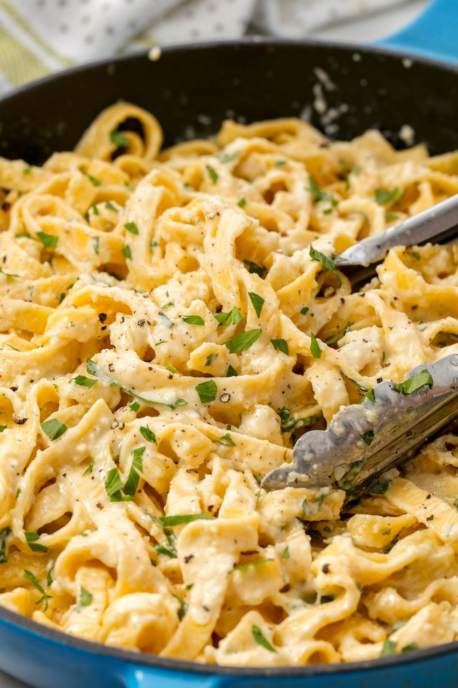

Alfredo Pasta

Fettuccine Alfredo is one of the most basic and delicious pasta recipes EVER—and it couldn't be easier to make! Our recipe is a little untraditional (there's heavy cream) but it's just as easy to whip up as the rest. In fact, it's so easy you can memorize it! Half a cup butter, cheese, and cream is all you need to make this luscious sauce. (Well, plus some pasta water, but that doesn't really count.)
Ingredients
- Kosher salt
- 1 lb. fettuccine
- 1/2 c. heavy cream
- 1/2 c. (1 stick) butter
- 1/2 c. freshly grated Parmesan, plus more for sprinkling
- Freshly ground black pepper
- 2 tbsp. chopped parsley
Recipe
- In a large pot of boiling salted water, cook pasta according to package instructions. Reserve about 1 cup of pasta water then drain.
- Meanwhile, in a large skillet over medium heat, add cream and butter. Cook until butter is melted and the cream is bubbling. Whisk in Parmesan and season with salt and pepper. Let sauce simmer 1 to 2 minutes to thicken slightly. Sauce will still bee thin, but will thicken more as sauce cools and once pasta is added.
- Add cooked pasta and toss until coated in sauce. If the sauce is too thick, add reserved pasta water, 1 tablespoon at a time. Garnish with parsley and serve immediately.
Main page